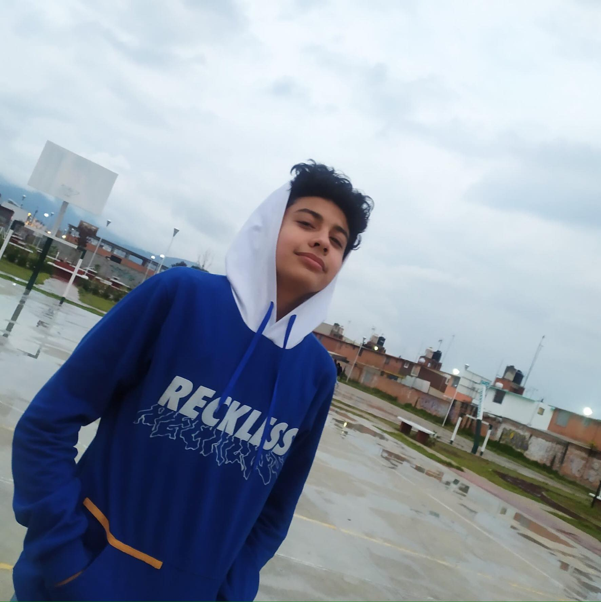
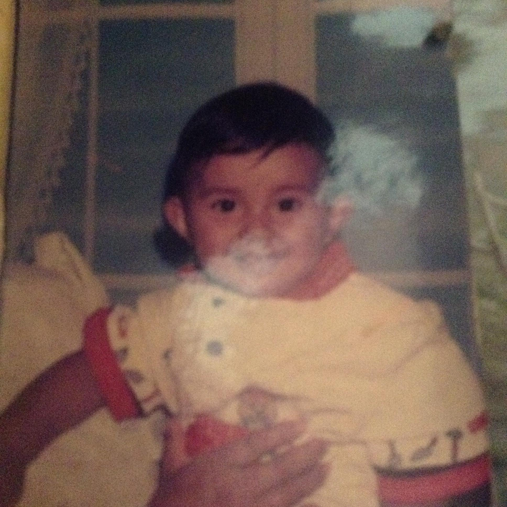
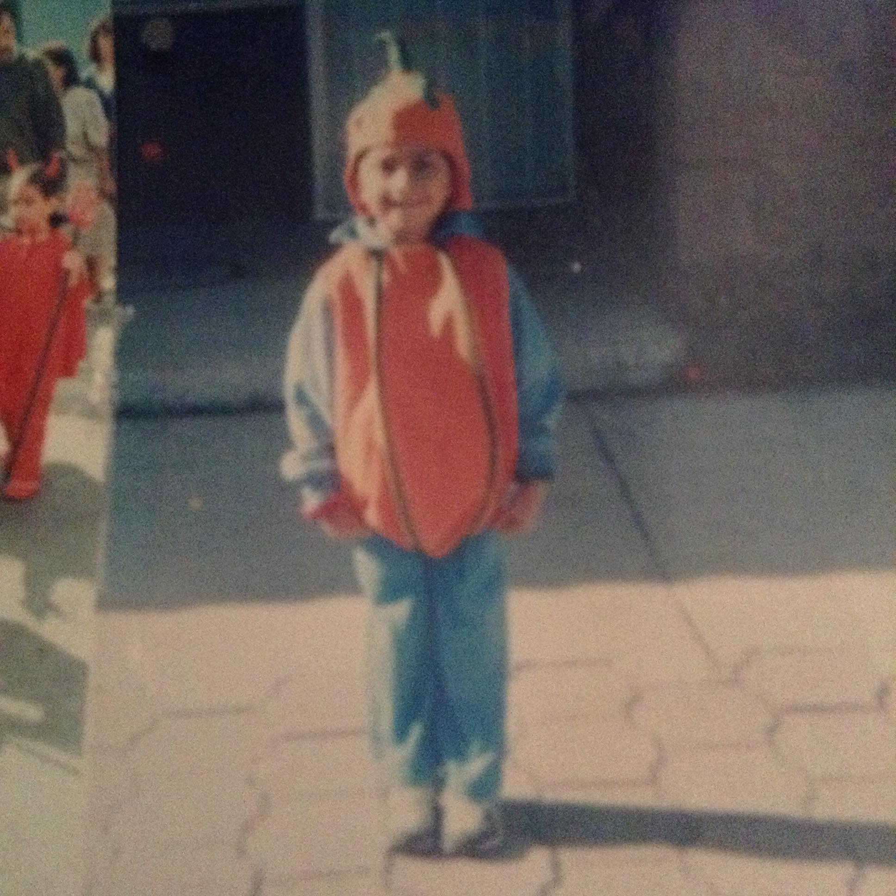
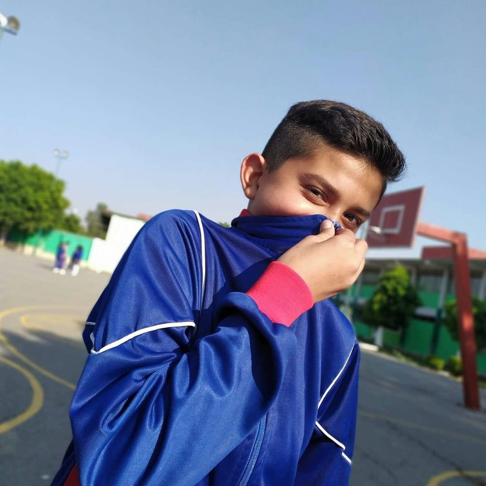

Menu

Nacimiento

Naci el 3 de octubre de 2004, mis padres son Ana Maria Garcia y Antonio Garcia, quienes me dieron el nombre de Miguel Eduardo, antes de mi tuvieron otro hijo, mi hermano Jose Antonio, mi gusto por explorar y conocer, hicieron que a mis 10 meses de nacido empezara a caminar, desde ahi mis padres se dieron cuenta que seria muy curioso y que no me daria por vencido, mis padres hicieron un excelente trabajo en mi formacion ya que me inculcaron buenos valores y habitos.
Infancia

Mi etapa de la infancia fue excelente diria yo, hice muchos amigos, hice varias travesuras, salia a jugar con mis amigos en fin una buena infancia sin contar que durante este tiempo curse kinder y primaria, era uno de los mejores en la primaria, estaba en cuadro de honor, mis calificaciones eran 9 o 10 todo perfecto diria yo pero lo que mas me gustaba era jugar Minecraft en casa de mi amigo Eduardo sin duda me quedaron muchas experiencias positivas sin contar que tenia muy marcado un valor de mis padres que es la responsabilidad, que me ayudo mucho para ganar buenos amigos.
Adolecencia

La adolecencia es donde se alcanza la plena madurez, y aqui es donde me encuentro, iniciemos la etapa de la secundaria, tenia miedo como todos pero al final la secundaria te ayuda a saber masomenos quein eres, yo encontre mi pasion por el futbol, mis calificaciones se mantuvieron y sobre todo conoci a mi mejor amigo Santiago el me a apoyado durante mucho tiempo, en las buenas y en las malas, en las alegrias y en las tristesas siempre se lo voy a agradecer. Ahora vamos con la preparatoria, para bien estoy en una de las mejores prepas del pais, pero esto implico mayor esfuerzo, e tenido muchas experiencias pero todas las personas que e conocido son de lo mejor y pues a seguir adelante que esos sueños no se van a cumplir solos...